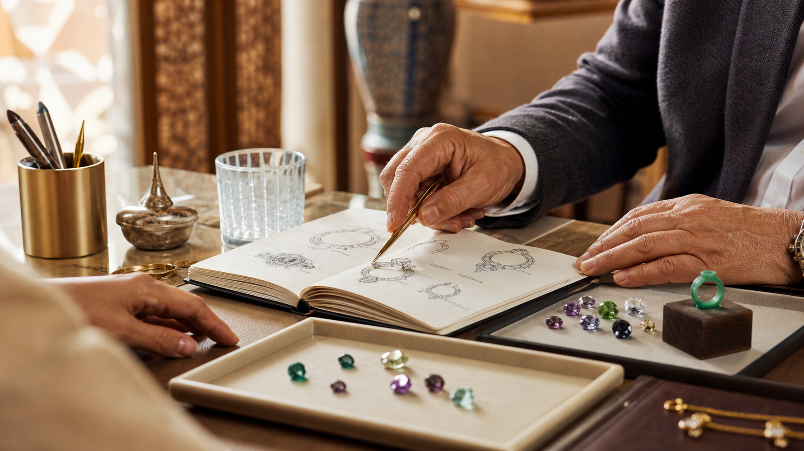

Guides pour choisir une pierre et préparer un bijou en or
Des guides détaillés pour comparer les pierres précieuses au Maroc, comprendre les prix, choisir une bague de fiançailles à Rabat et préparer une création en or sur-mesure.
 Saphir
Saphir
Choisir un saphir bleu au Maroc
Couleur, profondeur, monture et style : les repères essentiels avant de commander un bijou serti d'un saphir.
Lire l'article Rubis
Rubis
Rubis : intensité et élégance
Comment lire la couleur d'un rubis et décider s'il convient à une bague, un pendentif ou une pièce signature.
Lire l'article Émeraude
Émeraude
Émeraude : nuances, présence et soin
Une pierre expressive qui demande un choix attentif de la monture et un usage quotidien raisonnable.
Lire l'article Diamant laboratoire
Diamant laboratoire
Diamant de laboratoire : ce qu'il faut savoir
Un éclat contemporain, à présenter avec transparence dans la fiche descriptive et le conseil client.
Lire l'article Guide achat
Guide achat
Pierre seule ou bijou monté ?
Comparer les deux options selon le budget, le délai, l'occasion et le niveau de personnalisation souhaité.
Lire l'article
Fiançailles RabatBague de fiançailles à Rabat
Pierre, or, budget, délai et style : un guide complet pour préparer une bague en saphir, rubis, émeraude ou diamant de laboratoire.
Lire l'article
Prix pierres Maroc
Prix d'une pierre précieuse au Maroc
Couleur, taille, dimensions, certificat, disponibilité et montage : les critères qui expliquent les écarts de prix.
Lire l'article Or 18kOr 18k et pierres précieuses
Comprendre le choix du métal, du sertissage et de la monture avant de commander un bijou en or au Maroc.
Lire l'article Joaillerie RabatBijoux en or à Rabat
Conseil, devis, transparence et WhatsApp : les critères avant de choisir une maison de joaillerie.
Lire l'article
Comparatif
Saphir ou diamant ?
Comparer couleur, éclat, style, usage quotidien et budget avant de choisir une bague.
Lire l'article
Certificat
Certificat de pierre précieuse
Comprendre fiche descriptive, nature de pierre, dimensions et transparence avant commande.
Lire l'article
Comparatif
Rubis ou émeraude ?
Comparer couleur, style, monture et entretien avant de choisir une pierre de caractère.
Lire l'article